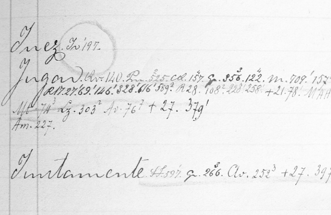

Iconografía de Cuervo. La iconografía de Cuervo es muy limitada porque huía de toda ostentación y fue frecuente su rechazo a que le tomaran fotografías. Vicente Pérez Silva en su artículo “Rufino José Cuervo en su lecho de muerte” (Noticias Culturales, No. 152, 1º de septiembre de 1973, págs. 4-7) recoge la producción artística del pintor y escultor antioqueño Marco Tobón Mejía, quien fruto de su observación en el lecho de muerte del gran filólogo bogotano, plasma su imagen en una mascarilla, un dibujo y un relieve. El Instituto Caro y Cuervo al llevar su nombre difunde un boceto de su figura en el logotipo institucional.
Identificación de los ejemplos. A partir del tomo iii del dcr el aporte de los ejemplos se identifica así: los que no van precedidos de ningún signo son los que dejó el mismo Cuervo; los que se marcan con el signo más (+) fueron recogidos por Martínez; los que llevan el signo por (x) corresponden a los colaboradores vinculados al Instituto a partir de 1973; y los precedidos por la sigla rae, que aparecen en el tomo iii, están tomados del fichero de la Real Academia Española.
Idiomas extranjeros. El estudio de los idiomas extranjeros tendría para Cuervo una gran importancia, con los profesores franceses Bergeron y Touzet aprendió francés. Fue discípulo de alemán de Ezequiel Uricoechea, en 1868 ya había ahondado en el estudio del árabe, conoció las lenguas clásicas y los idiomas modernos y se formó como filólogo en el ambiente de su ciudad natal. Con respecto a los idiomas extranjeros, F. A. Martínez dice: “Observamos que en 1871 Cuervo podía argumentar lingüísticamente con el sánscrito, armenio, griego, latín, celta, gótico, islandés, sueco, danés y flamenco, letón, lituano y ruso. Y dentro de las lenguas románicas con el italiano, portugués, francés y provenzal, sin contar el español, de cuya repartición dialectal muestra precisa información al referir al catalán, valenciano, gallego y mallorquín. Remite, además, al vascuense, y dentro del campo de las lenguas semíticas, al hebreo, al árabe y en alguna ocasión al sirio. Visto panorámicamente, este cuadro (en el que aparecen representados los grupos indo-ario, armenio, helénico, italo-celta, germano y balto-eslavo por una parte, y el románico por otra) ofrece una perspectiva muy clara y completa del paisaje lingüístico interior de Cuervo, en el cual, por así decirlo, apenas hay matiz que no pueda distinguirse”[1].
Instituto Caro y Cuervo. La ley 5ª de 1942, con ocasión del centenario de M. A. Caro y de R. J. Cuervo, creó el Instituto Caro y Cuervo, cuyo fin será, reza la ley: “Continuar el Diccionario de construcción y régimen de la lengua castellana y preparar la edición crítica de sus obras”. Debemos recordar que esta ley fue promovida por la Academia Colombiana de la Lengua, especialmente por el padre Félix Restrepo. Hoy, finalizado el Diccionario, el Instituto Caro y Cuervo es una entidad adscrita al Ministerio de Cultura y tiene como objetivo principal cultivar la investigación científica en los campos de la lingüística, la filología, la literatura, las humanidades y la historia de la cultura colombiana.
Interrupción del Diccionario. El Diccionario se interrumpe por múltiples motivos entre otros, por la precaria salud y vejez prematura que padece el autor, la profunda aflicción que le produjo la muerte de su hermano Ángel, por problemas económicos para sostener tan costosa empresa, amén de conflictos legales con los editores, por la decepción que le causara el darse cuenta de las inexactitudes y errores de las obras consultadas, especialmente las de la Biblioteca de autores españoles de Rivadeneira y finalmente por la extensión de la obra que ya se alejaba de los presupuestos con que había sido concebida, desfase por lo demás muy propio de muchos proyectos lexicográficos.
* * *
[1] Martínez, en Cuervo, 1987, i, lxxxiii - lxxxiv.
